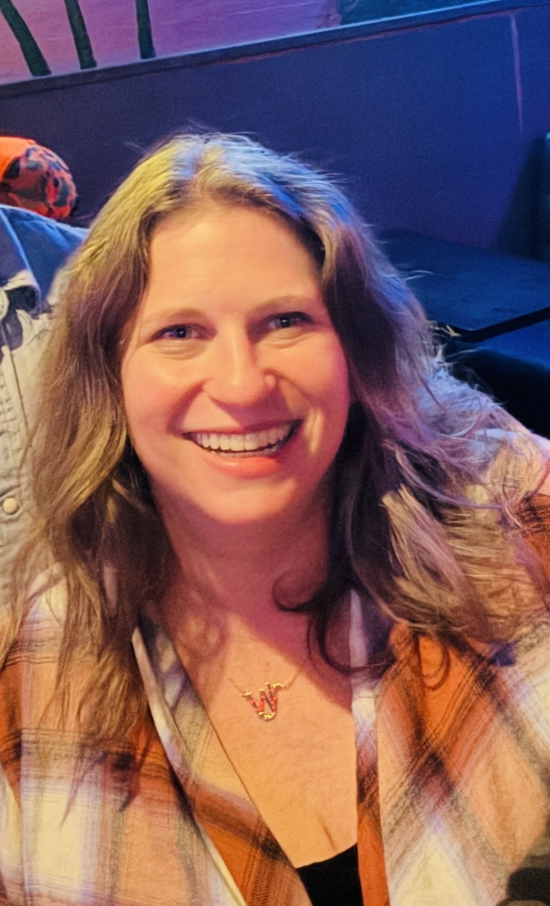

Hi, I’m Jana Wollam—a born-and-raised Dallas native with a lifelong love for creating order out of chaos.
My journey began at June Shelton School, where I first discovered the power of structure and organization. That foundation stayed with me through college and into the corporate world.
Even as I built a career in a highly structured environment, organizing was always my true passion. In my spare time, I found joy in helping friends, family, teachers, and coworkers bring order to their spaces—whether it was a messy garage, a cluttered classroom, or an overflowing pantry. Shelton gave me the starting tools, but I kept learning through hands-on experience, trial and error, endless reading, and inspiration from others in the field.
With over 20 years of practical organizing experience and the steady encouragement of my husband, family, and friends, I finally made the leap—turning my long-time side project into a full-time business.
As a professional organizer with a heart for helping busy people, families, and seniors I founded OrgaNICE by JW to provide respectful, one-on-one support through life's transitions. I understand that downsizing or letting go of belongings can be deeply emotional. My approach is calm, thoughtful, and always free of judgment.
Whether I'm helping you sort a lifetime of memories or make your home safer and more manageable, I'm here to lighten the load-both physically and emotionally.